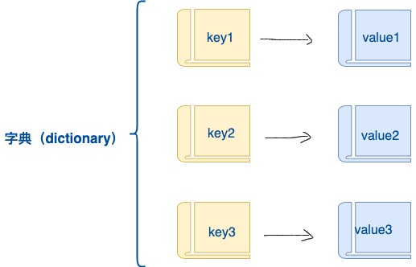
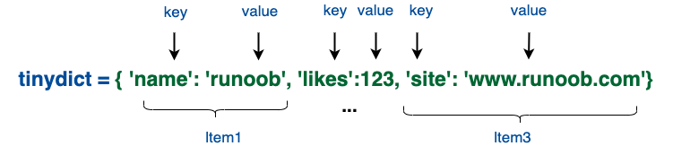

Python3 辞書
辞書はもう1つの可変コンテナモデルであり、任意の型のオブジェクトを格納できます。
辞書の各キーと値key=>valueのペアはコロンで:区切り、各ペアはカンマ(,)で区切り、辞書全体は中括弧{}で囲みます。形式は次のとおりです。
d = {key1 : value1, key2 : value2, key3 : value3 }
注意：dictPythonのキーワードおよび組み込み関数として、変数名をdict。

キーは一意である必要がありますが、値はその必要はありません。
値は任意のデータ型を取ることができますが、キーは文字列や数値などの不変型である必要があります。
簡単な辞書の実例：
tinydict = {'name': 'runoob', 'likes': 123, 'url': 'www.runoob.com'}

このように辞書を作成することもできます：
tinydict1 = { 'abc': 456 }
tinydict2 = { 'abc': 123, 98.6: 37 }
空の辞書を作成
中括弧を使用{ }空の辞書を作成：
実例
emptyDict = {}
# 辞書を出力
print(emptyDict)
# 辞書の数を確認
print("Length:", len(emptyDict))
# 型を確認
print(type(emptyDict))
上記の実例の出力結果：
{}
Length: 0
<class 'dict'>
組み込み関数を使用dict()辞書を作成：
実例
# 辞書を出力
print(emptyDict)
# 辞書の数を確認
print("Length:",len(emptyDict))
# 型を確認
print(type(emptyDict))
上記の実例の出力結果：
{}
Length: 0
<class 'dict'>
辞書の値にアクセス
対応するキーを角括弧に入れます。次の実例のとおりです。
実例
上記の実例の出力結果：
tinydict['Name']: Runoob tinydict['Age']: 7
辞書にないキーを使用してデータにアクセスすると、次のようなエラーが出力されます：
実例
上記の実例の出力結果：
Traceback (most recent call last):
File "test.py", line 5, in <module>
print ("tinydict['Alice']: ", tinydict['Alice'])
KeyError: 'Alice'
辞書の修正
辞書に新しい内容を追加する方法は、新しいキー/値ペアを追加することです。既存のキー/値ペアの変更や削除は次の実例のとおりです。
実例
tinydict['Age']: 8 tinydict['School']: 菜鸟教程
辞書の要素を削除
単一の要素を削除することも、辞書を空にすることもできます。空にするには1つの操作だけで済みます。
辞書を明示的に削除するには del コマンドを使用します。次の実例のとおりです。
実例
ただし、これは例外を引き起こします。del 操作を実行すると辞書が存在しなくなるためです：
Traceback (most recent call last):
File "/runoob-test/test.py", line 9, in <module>
print ("tinydict['Age']: ", tinydict['Age'])
NameError: name 'tinydict' is not defined
注：del() メソッドについては後で説明します。
辞書のキーの特性
辞書の値は任意の Python オブジェクトにすることができ、標準のオブジェクトでもユーザー定義のオブジェクトでも構いませんが、キーはそうではありません。
覚えておくべき重要な点が2つあります：
1）同じキーが2回出現することはできません。作成時に同じキーが2回代入された場合、後者の値が保持されます。次の実例のとおりです：
実例
上記の実例の出力結果：
tinydict['Name']: 小菜鸟
2）キーは不変でなければなりません。そのため、数字、文字列、タプルをキーとして使用できますが、リストは使用できません。次の実例のとおりです：
実例
上記の実例の出力結果：
Traceback (most recent call last):
File "test.py", line 3, in <module>
tinydict = {['Name']: 'Runoob', 'Age': 7}
TypeError: unhashable type: 'list'
辞書の組み込み関数とメソッド
Pythonの辞書には以下の組み込み関数が含まれています：
| 番号 | 関数と説明 | 実例 |
|---|---|---|
| 1 | len(dict) 辞書の要素数、すなわちキーの総数を計算します。 |
>>> tinydict = {'Name': 'Runoob', 'Age': 7, 'Class': 'First'}
>>> len(tinydict)
3
|
| 2 | str(dict) 辞書を出力し、印刷可能な文字列表現を返します。 |
>>> tinydict = {'Name': 'Runoob', 'Age': 7, 'Class': 'First'}
>>> str(tinydict)
"{'Name': 'Runoob', 'Class': 'First', 'Age': 7}"
|
| 3 | type(variable) 入力された変数の型を返します。変数が辞書の場合は辞書型を返します。 |
>>> tinydict = {'Name': 'Runoob', 'Age': 7, 'Class': 'First'}
>>> type(tinydict)
<class 'dict'>
|
Pythonの辞書には以下の組み込みメソッドが含まれています：
| 番号 | 関数と説明 |
|---|---|
| 1 | dict.clear() 辞書内のすべての要素を削除します |
| 2 | dict.copy() 辞書の浅いコピーを返します |
| 3 | dict.fromkeys() 新しい辞書を作成し、シーケンス seq の要素を辞書のキーとし、val を辞書のすべてのキーに対応する初期値とします |
| 4 | dict.get(key, default=None) 指定したキーの値を返します。キーが辞書にない場合は default で設定されたデフォルト値を返します |
| 5 | key in dict キーが辞書 dict にあれば true を返し、なければ false を返します |
| 6 | dict.items() リストとしてビューオブジェクトを返します |
| 7 | dict.keys() ビューオブジェクトを返します |
| 8 | dict.setdefault(key, default=None) get() と似ていますが、キーが辞書に存在しない場合は、キーを追加して値を default に設定します |
| 9 | dict.update(dict2) 辞書 dict2 のキー/値ペアを dict に更新します |
| 10 | dict.values() ビューオブジェクトを返します |
| 11 | dict.pop(key[,default]) 辞書の key（キー）に対応する値を削除し、削除された値を返します。 |
| 12 | dict.popitem() 辞書の最後のキーと値のペアを返して削除します。 |
hellowqp
wqp***a@foxmail.com
辞書のキーと値は「読み取り専用」なので、キーと値を別々に初期化することはできません。つまり、次の定義は誤りです：
>>> dic = {} >>> dic.keys = (1,2,3,4,5,6) Traceback (most recent call last): File "<stdin>", line 1, in <module> AttributeError: 'dict' object attribute 'keys' is read-only >>> dic.values = ("a","b","c","d","e","f") Traceback (most recent call last): File "<stdin>", line 1, in <module> AttributeError: 'dict' object attribute 'values' is read-only >>>hellowqp
wqp***a@foxmail.com
hackmeng
715***8@qq.com
辞書は無制限のネストをサポートしています。次のコードのとおりです：
cities={ '北京':{ '朝阳':['国贸','CBD','天阶','我爱我家','链接地产'], '海淀':['圆明园','苏州街','中关村','北京大学'], '昌平':['沙河','南口','小汤山',], '怀柔':['桃花','梅花','大山'], '密云':['密云A','密云B','密云C'] }, '河北':{ '石家庄':['石家庄A','石家庄B','石家庄C','石家庄D','石家庄E'], '张家口':['张家口A','张家口B','张家口C'], '承德':['承德A','承德B','承德C','承德D'] } }以下の方法で列挙することができます
for i in cities['北京']: print(i)以下の結果がリストアップされます：
for i in cities['北京']['海淀']: print(i)以下の結果を出力します：
hackmeng
715***8@qq.com
匿名
123***789@qq.com
辞書を使用して学生の名前と点数を記録し、さらにランク分けします：
#!/usr/bin/python3 students= {} write = 1 while write : name = str(input('输入名字:')) grade = int(input('输入分数:')) students[str(name)] = grade write= int(input('继续输入？\n 1/继续 0/退出')) print('name rate'.center(20,'-')) for key,value in students.items(): if value >= 90: print('%s %s A'.center(20,'-')%(key,value)) elif 89 > value >= 60 : print('%s %s B'.center(20,'-')%(key,value)) else: print('%s %s C'.center(20,'-')%(key,value))テストの出力結果：
匿名
123***789@qq.com
刀疤007
809***785@qq.com
辞書は以下の方法で key と value を入れ替えることができます。もちろん、元の value の型に注意する必要があり、不変型でなければなりません：
dic = { 'a': 1, 'b': 2, 'c': 3, } reverse = {v: k for k, v in dic.items()} print(dic) print(reverse)出力は次のとおりです：
{'a': 1, 'b': 2, 'c': 3} {1: 'a', 2: 'b', 3: 'c'}刀疤007
809***785@qq.com
初心者がPythonを学ぶ
179***943@qq.com
b= {'a':'runoob','b':'google'} for i in b.values(): print(i) for c in b.keys(): print(c)実行した出力結果は次のとおりです：
初心者がPythonを学ぶ
179***943@qq.com
我要搞学习
li_***ia@126.com
辞書フィールドの比較
辞書内の最大の値とそのキーを取得します：
prices = { 'A':123, 'B':450.1, 'C':12, 'E':444, } max_prices = max(zip(prices.values(), prices.keys())) print(max_prices) # (450.1, 'B')我要搞学习
li_***ia@126.com
david wang
imf***fly@163.com
参考URL
Python3.x ではこのような問題に遭遇します：
>>> sites_link = {'runoog':'runoob.com', 'google':'google.com'} >>> sides = sites_link.keys() >>> print(sides[0]) Traceback (most recent call last): File "<stdin>", line 1, in <module> TypeError: 'dict_keys' object does not support indexing >>>原因の説明と解決方法：
python2.x では dict.keys はリストを返しますが、Python 3.x では dict.keys は dict_keys オブジェクトを返します。リストに変換する必要がある場合は、次を使用してください：
上記の実例を修正：
>>> sites_link = {'runoog':'runoob.com', 'google':'google.com'} >>> sides = sites_link.keys() >>> list(sides) ['runoog', 'google'] >>>david wang
imf***fly@163.com
参考URL
hichcock
hic***ck_tian@hotmail.com
values から key を取得する方法：
>>> dic={"a":1,"b":2,"c":3} >>> list(dic.keys())[list(dic.values()).index(1)] 'a'hichcock
hic***ck_tian@hotmail.com
nicergj
nic***j@163.com
辞書リスト、つまりリスト内に辞書をネストする場合：
dict_0 = {'color': 'green', 'points': 5} dict_1 = {'color': 'yellow', 'points': 10} dict_2 = {'color': 'red', 'points': 15} lists = [dict_0, dict_1, dict_2] for dict in lists: print(dict)出力：
{'color': 'green', 'points': 5} {'color': 'yellow', 'points': 10} {'color': 'red', 'points': 15}nicergj
nic***j@163.com
blning
165***9299@qq.com
辞書内包表記：
形式：
{key:value for variable in iterable [if expression]}実行手順：
blning
165***9299@qq.com
蓝胖好肥
wuw***yself@qq.com
dict.fromkeys() には落とし穴があります：
例：
l = [1,2,3] d = {}.fromkeys(l , [])このようにして得られる d は次のとおりです:
{1:[] , 2:[] , 3:[]}実はこれらの3つのリストのアドレスは同じであり、任意の1つのリストの値を変更すると、すべてのリストの値が変更されます。
この方法を使用して解決できます：
d = {key : [] for key in l}蓝胖好肥
wuw***yself@qq.com
nn讷豆tt
kuz***63.com
上記のコメントの方法には同じ問題がまだあります。つまり、任意の1つのリストの値を変更すると、すべてのリストの値が変更されることです。
d = {key : [] for key in l}以下の方法で、ネストされた辞書の上記の問題を解決できます：
l = [1,2,3] j = ['a', 'b', 'c'] k = ['x', 'y', 'z'] d = {key : [] for key in l} d = {key : d.copy() for key in j} d = {key : d.copy() for key in k}nn讷豆tt
kuz***63.com
悠竹
692***866@qq.com
辞書実装の分岐要件：
def status(code): status = { 400:"print('Bad request')", 404:"print('Not found')" } return eval(status [code]) status(400)出力：
悠竹
692***866@qq.com